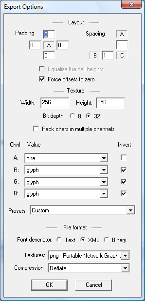

You can open the export options dialog by going to the Options menu and choosing Export options, or you can just press T on the keyboard.
This dialog controls how the font will be stored, i.e. texture layout, file format, etc.
Padding is useful when you want to add some post processing effects in another paint program. For example, if you want to add a blurring effect that uses a 5x5 kernel, you would add a padding of 2 on all sides. Similarly if you want to add a drop shadow, you would add a bit of padding below and to the right of the characters (assuming that's the direction of the drop shadow that you want).
The spacing controls how much minimum space is left between characters in the font texture. If you're using mipmapping to scale the font texture when drawing the font, you'll need to add spacing to avoid bleeding when the texture is downscaled. The more mipmap levels you use the more spacing you need.
Bilinear filtering may also cause bleeding, so unless you use pixel perfect drawing, where each texel is perfectly mapped to a pixel on the screen with a 1-to-1 releation ship you'll want to use at least 1 for vertical and horizontal spacing.
When this option is checked, all the font characters will be exported into cells of equal height. This option is especially useful when you workflow for producing the final font includes a post processing step where the characters are 'painted' based on the height of character, e.g. when applying a gradient.
The drawback is that less characters will fit in the texture, and the font renderer will draw larger rectangles.
This option was created to improve support for font renderers that don't handle xoffset, yoffset, and xadvance. When the option is checked the glyph images will be padded so that xoffset and yoffset will be 0 and xadvance will be equal to the width. This option also forces the equalization of the cell heights.
Observe, that this will modify the final spacing between characters if the original TrueType font uses negative xoffsets, or xadvance that is smaller than the glyph width, i.e. if the characters have any overhang.
BMFont supports several different texture layouts. The width and height, of course control the size of the texture. You'll want to keep the texture as small as possible, while still allowing all characters to fit in one texture.
If you're importing colored icons, or planning on using post processing to add colors to the characters, then you'll want to choose the 32bit format, otherwise the 8bit format may be sufficient.
If you choose the 32bit format, you may still optimize the usage of the texture memory if you choose to pack characters in each channel, though that will require a special pixel shader to decode during drawing. In this mode you can still import colored icons, the characters will be properly packed around them.
The font outline can also be encoded together with the character in 8 bits, allowing you to store many more characters in the same space than if you had stored the outlined characters as colored images. This too require a special pixel shader to decode during drawing.
Channel options
Some of the more common choices are:
Finally you can choose the file format for both the font descriptor and textures. This is mostly a matter of choice, rather than one having more benefits than the other. Though if you want to save disc space, you may want to choose binary file descriptor with png textures.